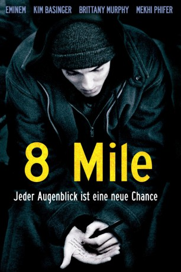
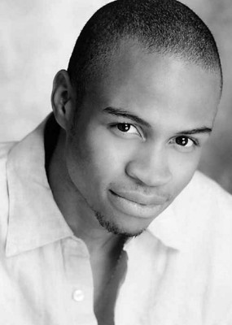
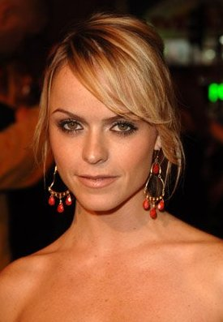
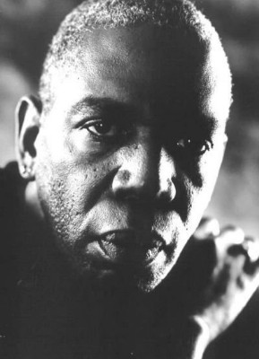
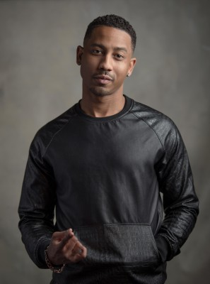

#1414 8 Mile
Auszeichnungen: 1 Oscars gewonnen
 
 IMDB-Wertung: 7.1 / 10
IMDB-Wertung: 7.1 / 10  Metascore: 77
Metascore: 77 
Jimmy Smith, genannt Bunny Rabbit, lebt in einem ärmlichen Viertel in Detroit. Er schlägt sich mit einem schlecht bezahlten Job durch und muss noch der Trennung von seiner Freundin wieder bei seiner Mutter Stephanie und deren arbeitlosem Freund wohnen. Ein möglicher Ausweg aus diesem trostlosen Leben wäre eine Karriere als Rapper, denn Jimmy hat Talent. Aber zum einen fehlt es ihm an Durchsetzungsvermögen, zum anderen hat er noch nichts dafür getan, noch nicht mal ein Demotape aufgenommen...
Jahr: 2002
Dauer: 110 Minuten
FSK: 12
Land: USA Studio: Universal PicturesTonspuren:
Untertitel: Deutsch,
Auflösung: 720p (1280x544) Größe: 4474 MB
Genre: Drama, Musik
Regisseur:  Curtis Hanson
Curtis Hanson
Drehbuch: Scott Silver
Soundtrack:
Darsteller:
- Eminem als Jimmy 'B-Rabbit' Smith
 Kim Basinger als Stephanie Smith
Kim Basinger als Stephanie Smith Mekhi Phifer als David 'Future' Porter
Mekhi Phifer als David 'Future' Porter Brittany Murphy als Alex
Brittany Murphy als Alex Evan Jones als Cheddar Bob
Evan Jones als Cheddar Bob- Omar Benson Miller als Sol George
- De'Angelo Wilson als DJ Iz
-  Eugene Byrd als Wink
-  Taryn Manning als Janeane
- Proof als Lil' Tic
 Michael Shannon als Greg Buehl
Michael Shannon als Greg Buehl- Chloe Greenfield als Lily Smith
 Anthony Mackie als Papa Doc
Anthony Mackie als Papa Doc- Malik Barnhardt als Moochie
 Xzibit als Male Lunch Truck Rapper
Xzibit als Male Lunch Truck Rapper-  Abdul Salaam El Razzac als Joe Lee Patton
-  Brandon T. Jackson als Chin Tiki Club Goer , uncredited
- Jason Jarchow als Bartender , uncredited
- Juanita Moore als Annie Johnson , archive footage, uncredited
- Nickola Shreli als Extra , uncredited
- Sara Stokes als Girl in Crowd , uncredited
- Larry Hudson als Bouncer
 Mike Bell als Shorty Mike
Mike Bell als Shorty Mike- DJ Head als Battle DJ
- Mary Hannigan als Mrs. Helgeland
- Strike als Lyckety-Splyt
- Nashawn 'Ox' Breedlove als Lotto
- Na'Keya Snoddy als Papa Doc's Girl
- Day Golfin als Day
- Allen Adams als Omar
- Hom als Parking Lot Rapper #1
- Obie Trice als Parking Lot Rapper #2
- Njeri Earth als Parking Lot Rapper #3
- Jennifer Kitchen als Willing Girl
- Kyla Womack als Alex's Friend
- Melissa Zaglanikzny als Christine
- Rockey Black als Rocky
- Craig Chandler als Paul
- Paul Bates als Manny
- Miz-Korona als Female Lunch Truck Rapper
- Steven Monroe als Plant Worker
- John Smith Jr. als Lobby Security Guard
- Venicia Foreman als WJLB Receptionist
- Waverly W. Alford II als Big O
- Bushman als WJLB Disc Jockey
- Adam Brook als Roy Darucher
- Stephen Detherage als Diner #1 , uncredited
- Karin Dicker als Sarah Jane - Age 8 , archive footage, uncredited
- Tracey Kroll als Shelter Nightclub Goer , uncredited
- Kei Leong als Shelter Nightclub Goer , uncredited
Datei: X:\2002\8 Mile (2002, FSK12, 1280x544).mkv seit 30.06.2015
Festplatte: HD 1996-2002
 Es gibt insgesamt 93 Filme in der Gruppe '2002'
Es gibt insgesamt 93 Filme in der Gruppe '2002'